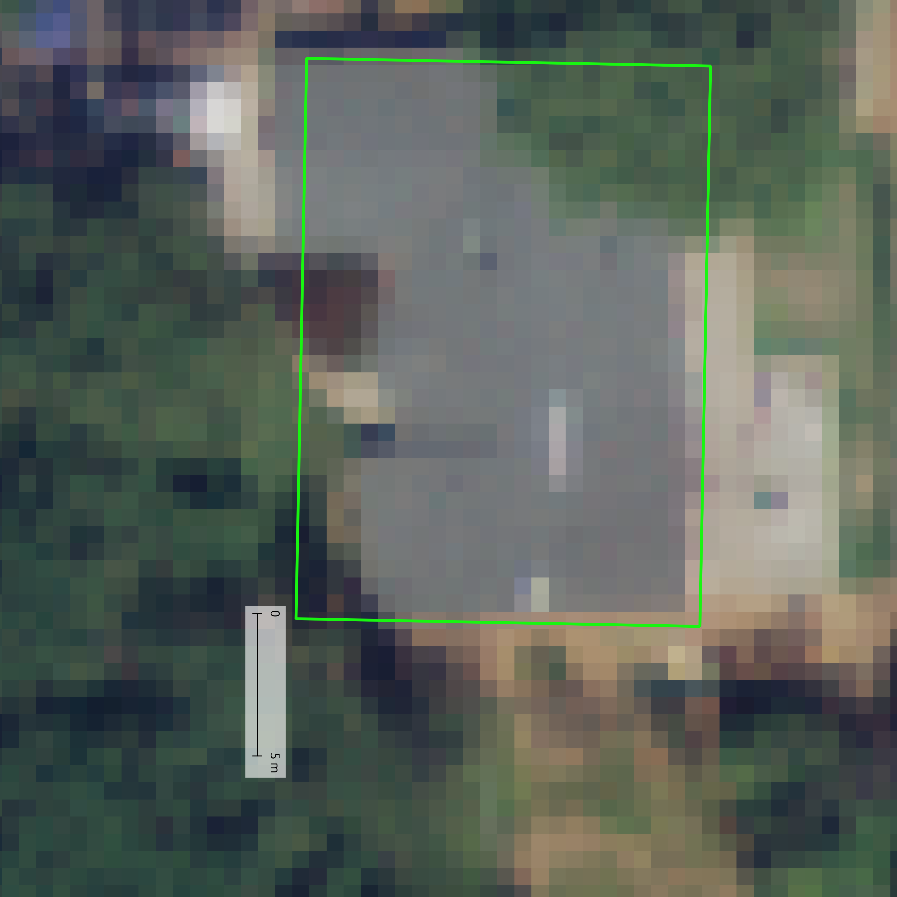
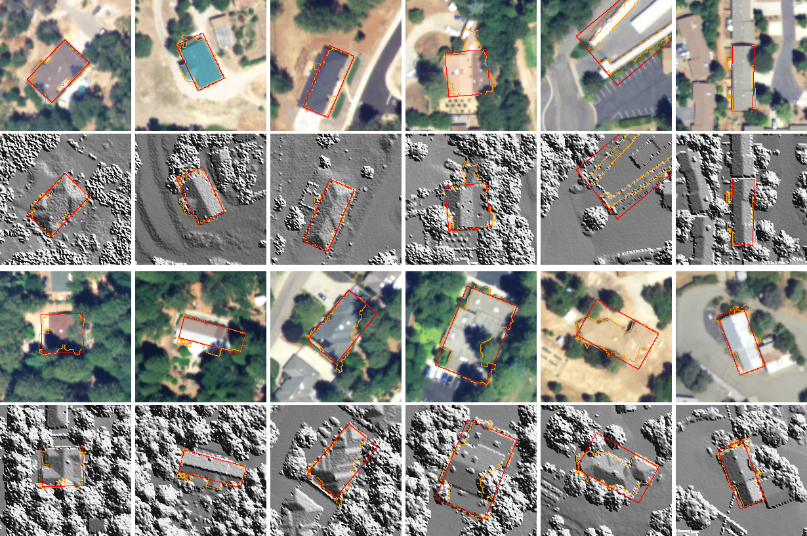

Georeferencing the post-fire imagery


The post-fire imagery is shifted, so it needs rubber-sheeting to line up
Preparing the buildings, lining up the imagery, and the review app
Paradise, CA · 2018 Camp Fire


The post-fire imagery is shifted, so it needs rubber-sheeting to line up
flowchart LR
input[("Cloudflare R2
GeoParquet buildings
and imagery")]
app["Review app
PostGIS, 8 reviewers
label and edit"]
output[("Cloudflare R2
exported GeoParquet
buildings and labels")]
input --> app --> output